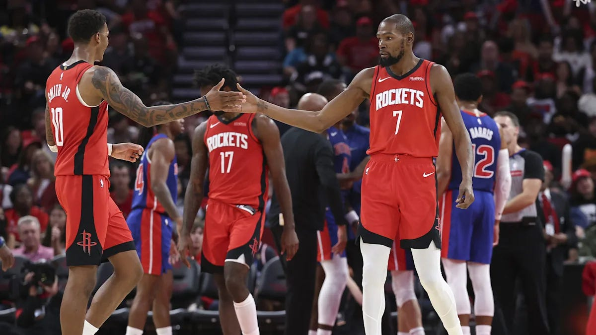
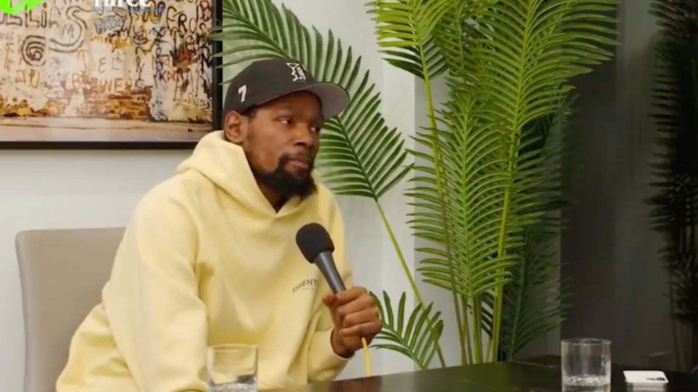

NBA All-Star Kevin Durant’s alleged burner went viral last week after some of the direct messages sent from the account were leaked. To be quite honest, the messages explain a lot about the way Durant’s teams have ended in the past.
Locker room turmoil with Draymond Green in Golden State. An unceremonious breakup with James Harden and Kyrie Irving in Brooklyn. A sudden and rather anticlimactic end to his time in Phoenix. All of Durant’s time with these teams had some things in common: An injury to Durant shows how much better a team is with him, there is locker room trouble (whether it was a direct problem with Durant or another teammate), and Durant’s tenure comes to a sudden end. These problems are seemingly seeping into his first year in a Houston Rockets uniform. Durant is seemingly going through on-court issues with teammate Jabari Smith Jr. in Houston right now, and the messages sent from this burner account would be quite the confirmation that Durant is not pleased with the team around him in Houston. But at some point, he has to become mature before he loses his opportunities to win championships and chase other endeavors off the court.
At age 37, Durant has only a few years left to chase another NBA title. It is not going to get done if he keeps insulting his teammates’ skills rather than trying to make it work on the court. Mentioned in the DMs are current teammates Alperen Sengun and Jabari Smith Jr., with whom he is currently trying to win a championship, as well as former teammates James Harden, Stephen Curry, and Russell Westbrook, with whom he had varying degrees of playoff success. It seems as though Durant’s career, especially the last chapter, will be defined by how well he manages to work with his teammates.

Trust is one of the biggest aspects of working with someone, whether you want to be a professional athlete or work in the media. As for Durant, he is currently one of the best basketball players on earth while also getting involved in media work during the offseason, appearing on podcasts and sharing his opinions on the game. The immature behavior of talking down on your teammates on the internet after games is going to catch up to him one way or another.
It is not just Durant’s career that may be defined by his immaturity, but his legacy, too. It is becoming increasingly common for players to join TV networks as basketball analysts or to start their own podcasts. Durant has appeared on his fair share of podcasts, but which of his teammates would even show up to his show? His aforementioned stints across the league indicate he does not necessarily have the most trust around the league. Similarly, what TV network would want to hire a guy who is constantly a problem behind the scenes? ESPN has previously let Paul Pierce go for concerns about his internet activity, so why would they bring Durant on if they had concerns about what may happen once he is brought into the studio?
At the end of the day, Durant is one of the greatest scorers ever, and the opportunities he will receive on and off the court can be completely in his control. However, consistent reports of immaturity at every stop Durant makes can cost him trust in the basketball world.
